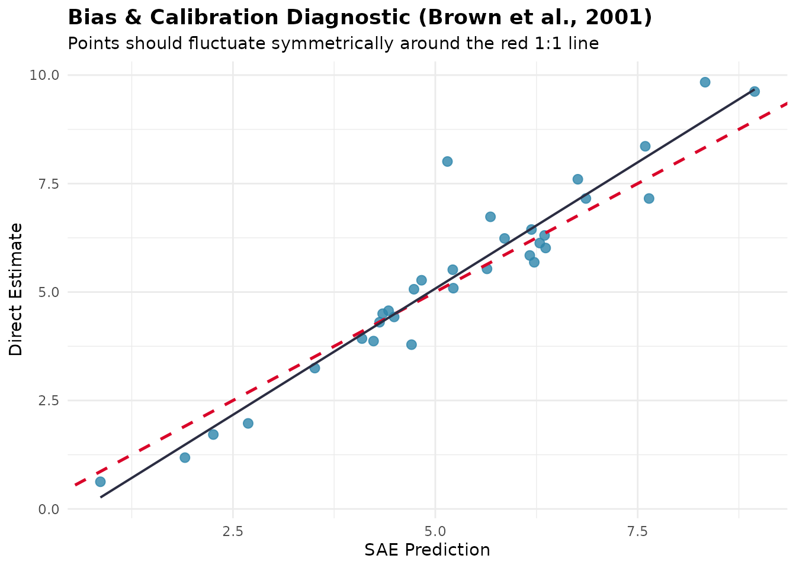

Alur Kerja yang Optimal untuk Estimasi Area Kecil
Source:vignettes/articles/id/optimal-workflow.Rmd
optimal-workflow.RmdArtikel ini menyusun fungsi-fungsi fastsae menurut
urutan yang biasa ditempuh dalam sebuah analisis, mulai dari estimasi
langsung hasil survei sampai tabel yang dipublikasikan. Urutan ini
adalah titik awal yang masuk akal, bukan aturan baku: setiap langkah
menjelaskan apa yang diperiksa dan apa yang perlu dilakukan dengan
hasilnya. Contohnya memakai data mys (rata-rata lama
sekolah penyandang disabilitas di 42 kabupaten, 10 di antaranya tanpa
sampel), sehingga semua keluaran di bawah berasal dari pemanggilan
fungsi yang sebenarnya.
| Langkah | Pertanyaan | Fungsi |
|---|---|---|
| 1 | Seberapa baik estimasi langsungnya? |
add_reliability_flags(),
gvf_smooth()
|
| 2 | Adakah struktur spasial yang perlu dimodelkan? |
create_weights(),
spatial_test()
|
| 3 | Kovariat mana yang dipakai? | step_sae() |
| 4 | Model mana yang dipilih? |
eblup_fh(), eblup_sfh(),
compare_sae()
|
| 5 | Apakah modelnya memadai? |
diagnose(), autoplot()
|
| 6 | Apakah estimasinya konsisten dengan total yang dipublikasikan? | benchmark_sae() |
| 7 | Bagaimana hasilnya dilaporkan? |
map_sae(), export_sae()
|
1. Memeriksa estimasi langsung
Model area kecil layak dipakai bila estimasi langsungnya tidak presisi. Estimasi model pertama, lalu tandai setiap domain menurut tingkat keandalan BPS (RSE paling tinggi 25%, 25–50%, dan di atas 50%):
fit_full <- eblup_fh(y ~ x1 + x2 + x3, vardir = ~vardir, data = mys, print_result = FALSE)
flags <- add_reliability_flags(fit_full)
table(flags$reliability)
#>
#> Reliable (RSE ≤ 25%) Use with caution (25% < RSE ≤ 50%)
#> 22 19
#> Unreliable (RSE > 50%)
#> 1Tingkat keandalan yang sama dapat dihitung untuk estimasi langsung
saja, dan dari situlah terlihat seberapa besar perbaikan yang bisa
diperoleh. Bila vardir sendiri tidak stabil (sampelnya
kecil sehingga varians yang dipakai pun hanya hasil estimasi), haluskan
dulu dengan gvf_smooth(). Model Fay-Herriot menganggap
vardir diketahui, sehingga ketidakstabilan pada
vardir langsung terbawa ke dalam penyusutan. Di sini
vardir dari mys dipakai apa adanya; metode
penghalusannya dijelaskan di ?gvf_smooth.
2. Adakah struktur spasial?
spatial_test() menjalankan serangkaian uji sebelum model
spasial apa pun diestimasi: Moran’s I pada estimasi langsung dan pada
residual regresi, uji LM Anselin, serta uji rasio likelihood model
Fay-Herriot Spasial terhadap model standar.
create_weights() membentuk W dari poligon atau
koordinat; dalam contoh ini mys_proxmat sudah tersedia.
spatial_test(y ~ x1 + x2 + x3, vardir = ~vardir, data = mys, W = mys_proxmat)
#>
#> ── Pre-Modeling Spatial Diagnostic Tests (fastsae) ─────────────────────────────
#>
#> ── 1. Direct Response Variable (ESDA) ──
#>
#> • Global Moran's I: -0.2773 (Expected: -0.0323, z-stat: -2.049)
#> • p-value: "0.9798" [ns]
#> ℹ Direct estimates show no significant spatial clustering.
#>
#> ── 2. Regression Residuals (Controlling for Auxiliary Variables) ──
#>
#> • Residual Moran's I: -0.246 (z-stat: -1.778, p-value: "0.9623") [ns]
#> • Anselin LM-Error Test: 3.616 (df = 1, p-value: "0.05724") [ns]
#> • Anselin LM-Lag Test: 1.974 (df = 1, p-value: "0.16")
#>
#> ── 3. Model Comparison (Standard FH vs Spatial FH) ──
#>
#> • Standard FH: sigma2_u = 2.1629, ML LogLik = -65.01, AIC = 140.02
#> • Spatial FH (SAR): sigma2_u = 0.8141, rho = -1, ML LogLik = -63.06, AIC =
#> 138.12
#> • Likelihood Ratio: Chisq = 3.901 (df = 1, p-value = "0.04825") [*]
#> • Information Delta: Delta AIC = -1.9, Delta BIC = -0.44
#>
#> ── 4. Final Recommendation ──
#>
#> Decision test: likelihood ratio test (FH vs Spatial FH) at alpha = 0.05.
#> ✔ SPATIAL MODEL RECOMMENDED: Significant spatial spillover detected.
#> ✔ The likelihood ratio test of rho = 0 rejects the standard Fay-Herriot model
#> in favour of the Spatial Fay-Herriot model.
#> ℹ Recommended functions: `eblup_sfh()` (Frequentist) or `hb_area(..., spatial =
#> 'bym2')` (Bayesian).Hasil uji-uji ini perlu dibaca bersama, bukan satu per satu. Di sini uji rasio likelihood signifikan secara tipis, tetapi Moran’s I residualnya negatif dan tidak signifikan, dan model spasial menempatkan autokorelasinya di batas ruang parameter:
fit_sfh_full <- eblup_sfh(y ~ x1 + x2 + x3, vardir = ~vardir, data = mys,
W = mys_proxmat, print_result = FALSE)
fit_sfh_full$rho
#> [1] -1Parameter SAR
berada di tepi ruang parameternya (cara eblup_sfh()
menanganinya dijelaskan di berkas NEWS). Nilai ini menunjukkan
ketergantungan spasial yang negatif, bukan positif, sehingga bukan pola
“wilayah bertetangga cenderung mirip” yang menjadi alasan memakai model
spasial. Pada data ini bukti adanya efek spasial lemah, dan keputusan di
bawah adalah tetap memakai model standar. Pada data dengan pengelompokan
positif yang jelas, semua uji akan sejalan, dan model spasial menjadi
pilihan.
3. Memilih kovariat
step_sae() menelusuri kovariat berdasarkan kriteria
informasi (bawaannya BIC) dan mengestimasi ulang model dengan pengaturan
yang sama di setiap langkah. Untuk model EBLUP, model-model dibandingkan
dengan ML karena likelihood REML tidak dapat membandingkan model yang
kovariatnya berbeda; model terpilih kemudian diestimasi ulang dengan
metode yang dipakai pada model awal.
sel <- step_sae(fit_full, trace = FALSE)
sel$path
#> Step BIC
#> 1 147.3513
#> 2 - x1 143.9140
#> 3 - x3 141.0402
formula(sel$model)
#> y ~ x2
#> <environment: 0x632abedf7b60>Pilihlah kovariat dengan model yang memang akan dipakai. Pada model
spasial, kovariat yang mulus secara spasial dan efek acak spasial
menjelaskan variasi yang sama, sehingga kovariat yang dipertahankan oleh
penelusuran nonspasial bisa menjadi mubazir setelah efek spasial
dimasukkan (lihat ?step_sae). Selain itu, pemilihan ini
mengoptimalkan kriteria pada data yang sama dengan data untuk
mengestimasi model, sehingga galat baku model terpilih tidak
memperhitungkan proses penelusurannya. Anggaplah model terpilih sebagai
deskripsi yang baik, bukan sebagai hipotesis yang sudah teruji.
4. Mengestimasi dan membandingkan kandidat
Estimasi spesifikasi terpilih sebagai model standar dan sebagai model spasial, lalu bandingkan keduanya pada domain yang sama:
fit_fh <- eblup_fh(y ~ x2, vardir = ~vardir, data = mys, print_result = FALSE)
fit_sfh <- eblup_sfh(y ~ x2, vardir = ~vardir, data = mys, W = mys_proxmat,
print_result = FALSE)
compare_sae(fit_fh, fit_sfh, names = c("FH", "SFH"))
#>
#> ── Small Area Estimation Model Concordance & Comparison ────────────────────────
#> Model 1: FH
#> Model 2: SFH
#> Matched Domains: 42
#> ────────────────────────────────────────────────────────────────────────────────
#>
#> Agreement, Ranking & Efficiency Metrics:
#> Group Metric Value
#> Domains Matched Domains 42
#> Agreement Mean Difference (SFH - FH) -0.0095
#> Agreement 95% Limits of Agreement [-0.7415, 0.7225]
#> Agreement Mean Absolute Difference (MAE) 0.2857
#> Agreement Root Mean Squared Difference (RMSD) 0.3691
#> Agreement Lin's Concordance Correlation (CCC) 0.9750
#> Uncertainty Median |Difference| / RMSE of FH 0.213
#> Uncertainty % of domains with |Difference| > RMSE of FH 0.0%
#> Ranking Spearman Rank Correlation (rho) 0.9610
#> Ranking Mean Absolute Rank Change 2.50
#> Ranking Shared Top 4 (highest estimates) 4 / 4
#> Ranking Shared Bottom 4 (lowest estimates) 4 / 4
#> Efficiency Mean MSE Ratio (FH / SFH) 1.3998
#> Efficiency Median MSE Ratio (FH / SFH) 1.2767
#> Efficiency % of domains where SFH is more efficient 100.0%
#> Efficiency Mean RSE % (FH) 25.13%
#> Efficiency Mean RSE % (SFH) 21.12%compare_sae() melaporkan kesesuaian (batas Bland-Altman,
korelasi konkordansi Lin), peringkat, dan efisiensi. Model yang di atas
kertas lebih efisien baru lebih baik bila modelnya juga benar: rasio MSE
dihitung di bawah asumsi masing-masing model, sehingga MSE yang lebih
kecil saja tidak cukup untuk membenarkan model yang parameter spasialnya
berada di batas. Di sini kedua himpunan estimasi sangat berdekatan,
sehingga model yang lebih sederhana dipertahankan.
Bila responsnya berupa proporsi, cacahan, atau besaran positif yang
menceng, atau bila ketidakpastian ingin dinyatakan sebagai posterior,
gunakan hb_area() (lihat artikel Bayesian). Untuk data tingkat unit,
gunakan eblup_bhf() atau hb_unit() (lihat artikel tingkat unit).
step_sae() dan compare_sae() juga berlaku
untuk model-model tersebut. Bila MSE lebih penting daripada estimasi
titiknya, eblup_sfh() dan eblup_stfh() juga
menyediakan MSE bootstrap parametrik (mse_type = "pbmse")
yang dijalankan secara paralel.
5. Memeriksa model
diag_fh <- diagnose(fit_fh, W = mys_proxmat[!is.na(mys$y), !is.na(mys$y)])
diag_fh$precision[c("mean_direct_rse", "mean_sae_rse", "prop_reliable")]
#> $mean_direct_rse
#> [1] 29.49003
#>
#> $mean_sae_rse
#> [1] 25.13293
#>
#> $prop_reliable
#> [1] 52.38095
diag_fh$goodness_of_fit[c("w_stat", "df", "p_value")]
#> NULLdiagnose() melaporkan peningkatan presisi dibandingkan
estimasi langsung, uji kecocokan model (goodness of fit) dari
Brown dkk. (2001), regresi kalibrasi deskriptif, dan autokorelasi
spasial residual. Cara membaca setiap bagiannya dijelaskan di artikel diagnostik. Grafiknya cukup
dibuat dengan satu pemanggilan:
autoplot(diag_fh, type = "calibration")
Ada dua hal yang perlu diperhatikan. Pertama, kemiringan kalibrasi yang jauh dari 1 disertai pola yang terlihat pada residual, yang menandakan ada kovariat yang terlewat atau fungsi link yang keliru. Kedua, residual yang mengelompok secara spasial, yang menjadi tanda untuk kembali ke langkah 2.
6. Benchmarking ke total yang dipublikasikan
Statistik resmi sering kali harus konsisten secara agregat: estimasi
area harus menghasilkan kembali angka yang telah dipublikasikan untuk
seluruh populasi. benchmark_sae() menyesuaikan model yang
sudah diestimasi. Targetnya harus berasal dari luar model, misalnya
estimasi langsung tingkat nasional dari survei yang sama. Dalam contoh
ini, rata-rata terbobot sampel dari estimasi langsung dipakai sebagai
penggantinya:
national <- weighted.mean(mys$y, mys$weight, na.rm = TRUE)
bm <- benchmark_sae(fit_fh, target = national, weight = mys$weight, method = "ratio")
c(target = national,
before = weighted.mean(bm$original, mys$weight),
after = weighted.mean(bm$benchmarked, mys$weight))
#> target before after
#> 5.848214 5.703441 5.848214Bobot yang semestinya dipakai adalah proporsi populasi tiap domain.
mys$weight adalah proporsi sampel; di sini ia
dipakai hanya agar contohnya dapat dijalankan. Dengan proporsi sampel,
benchmarking menghasilkan kembali angka yang bukan rata-rata populasi.
Metode rasio, selisih, optimal, dan logit berbeda dalam cara menyebarkan
penyesuaian dan dalam dampaknya terhadap MSE (lihat
?benchmark_sae). Benchmarking juga menambah MSE estimasi
yang disesuaikan (kolom mse_benchmarked pada hasilnya).
Bila kendala tersebut ingin langsung dimasukkan ke dalam estimasi,
gunakan self_benchmark = TRUE pada fungsi modelnya.
7. Pelaporan
map_sae() menggambar peta koroplet untuk estimasi, RSE,
atau tingkat keandalannya dari sebuah objek sf, sedangkan
export_sae() menulis estimasi, penanda keandalan, dan nilai
hasil benchmarking ke lembar kerja:
out <- tempfile(fileext = ".xlsx")
invisible(export_sae(fit_fh, file = out, benchmark = bm))
#> ✔ Successfully exported SAE results to Excel: /tmp/RtmptiAV4y/file53767ddc1ac8.xlsx
file.exists(out)
#> [1] TRUE
# memerlukan poligon: objek sf dengan satu baris per domain dan kunci untuk mencocokkan `domain`
map_sae(fit_fh, sf_geom = polygons, key = "area_id", type = "estimate")
map_sae(fit_fh, sf_geom = polygons, key = "area_id", type = "reliability")Cantumkan RSE atau tingkat keandalan di samping setiap estimasi, dan
sebutkan area mana yang tidak memiliki estimasi langsung
(mys$area[is.na(mys$y)]), karena nilainya semata-mata
berasal dari model.
Ringkasan keputusan
- Mulailah dari keandalan estimasi langsung; pakai model bila memang memberi manfaat.
- Uji struktur spasial, dan pastikan hasil uji dan parameter yang terestimasi sejalan sebelum menambahkan efek spasial.
- Pilih kovariat dengan model yang akan dipakai.
- Bandingkan kandidat berdasarkan kesesuaian dan pemeriksaan kelayakan model, bukan hanya berdasarkan MSE.
- Periksa kalibrasi, residual, dan autokorelasi spasial residual sebelum publikasi.
- Lakukan benchmarking hanya ke target yang berasal dari luar model, dengan bobot populasi.
- Publikasikan ukuran ketidakpastian dan tingkat keandalan bersama setiap estimasi.
Daftar Pustaka
- Brown, G., Chambers, R., Heady, P., & Heasman, D. (2001). Evaluation of small area estimation methods: An application to unemployment estimates from the UK LFS. Proceedings of Statistics Canada Symposium 2001: Achieving Data Quality in a Statistical Agency.
- Rao, J. N. K., & Molina, I. (2015). Small Area Estimation (2nd ed.). John Wiley & Sons.